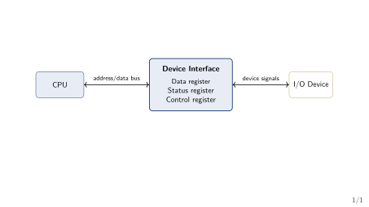
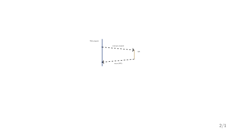
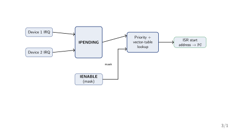
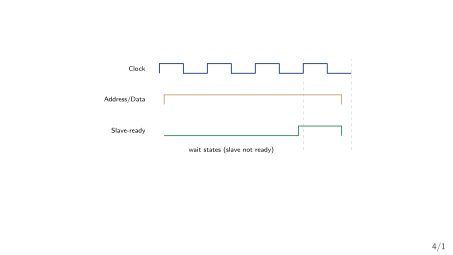
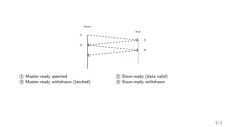
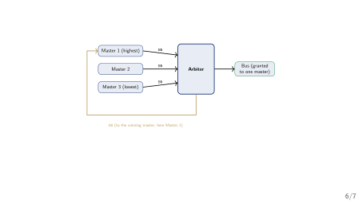
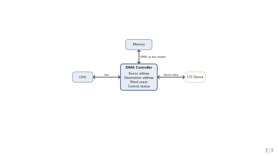

Week 8 — How a CPU Talks to the Outside World
GCET Ganderbal
Last week: how the CPU controls itself. Hardwired control (Week 6) and microprogrammed control (Week 7) both answered the same question: how does the CPU generate its own control-step sequence, cycle by cycle? Both designs looked inward — registers, ALU, and an internal bus.
The gap Week 7 left open. Keyboards, disks, and printers are far slower than the CPU. How does the CPU get data from them — and what does the waiting cost?
Running thread for today. One keyboard-input / display-output pair (KIN/DOUT) follows us through polling and interrupts; a 4096-byte disk block follows us through bus timing and into DMA/IOP.
Before any technique: what is the problem they all solve?
Section 2
The I/O Problem and the I/O Unit
Question. A CPU runs one instruction about every nanosecond (\(10^9\) instructions per second). A keyboard produces one keystroke about every 200 milliseconds (about 5 keystrokes per second). If the CPU must read every keystroke, what should it do during the 200 ms between two keystrokes?
Memory-mapped I/O. A device’s data, status, and control registers are given addresses in the normal memory space. The CPU reads and writes a device exactly like it reads and writes memory — no special I/O instructions needed (Hamacher et al. 2012).

What this diagram shows: the CPU never talks to the device directly. It talks to three registers inside the device’s interface, over the ordinary bus:
KBD_DATA for the keyboard, DISP_DATA for the display).KIN (a keystroke is waiting) or DOUT (display is ready for the next character).The interface also performs address decoding, timing, and format conversion — the “six functions” of an interface circuit, Hamacher Ch. 7 §7.4, p. 238.
| Memory-mapped I/O | Isolated I/O | |
|---|---|---|
| Address space | Devices share the memory space | Separate I/O space |
| Instructions | Ordinary Load/Store |
Dedicated I/O instructions |
| Simplicity | Simpler for the programmer | Extra hardware/instructions |
| Typical use | Most modern processors | Classic IBM mainframes |
We use memory-mapped I/O for the rest of the deck — it is what the Hamacher examples assume (Hamacher et al. 2012). The isolated form is the standard alternative (Mano Ch. 11).
Technique 1: the CPU does all the asking — polling.
Section 3
Program-Controlled I/O (Polling)
Polling. In program-controlled I/O (also called polling), the CPU runs a loop that repeatedly reads the device’s status register and checks a ready flag. When the flag says the device is ready, the CPU stops the loop and performs the data transfer itself.
KIN (a keyboard keystroke is ready in KBD_DATA) and DOUT (the display is ready for the next character in DISP_DATA).Keyboard input
Read one keystroke into register R.
READWAIT loop
READWAIT: Test KIN
Branch=0 READWAIT
MoveByte KBD_DATA, RDisplay output
Send register R to the display.
WRITEWAIT loop
WRITEWAIT: Test DOUT
Branch=0 WRITEWAIT
MoveByte R, DISP_DATAHow to read these loops:
Test KIN reads the status flag; Branch=0 jumps back while the flag is still 0 (not ready).1 does the loop fall through to the single transfer instruction.Each pass runs the same two-test instructions again — the CPU is spinning, doing no useful work between keystrokes (Hamacher et al. 2012).
The setup. A 2 GHz CPU (one instruction every 0.5 ns) polls a keyboard that produces 5 keystrokes per second. Each poll takes one 2-instruction pass (about 1 ns). Between two keystrokes, how many polls run, and how much CPU time do they waste?
Moral: polling is trivially simple but hands the CPU over to the slowest device in the system.
| Advantage | Disadvantage |
|---|---|
| No extra hardware needed | Wastes CPU time while waiting |
| Trivial to implement | CPU cannot do other work during the wait |
| Works for any device | Cost grows with device slowness |
When polling is (and isn’t) a good fit. Good fit: one slow device and a CPU with nothing else to do. Bad fit: a fast device, or several devices — the CPU spends its life asking questions instead of computing.
Technique 2: what if the device asked the CPU, instead of the CPU asking the device?
Section 4
Interrupt-Driven I/O
Interrupt. An interrupt is a signal from a device that suspends the CPU’s current program and forces it to jump to a fixed handler — the interrupt-service routine (ISR) — which services the device. When the ISR finishes, the CPU resumes the original program exactly where it left off.

A request reaches the CPU only if both switches are on.
IE — one interrupt-enable bit inside the processor status register (PS). When IE\(=0\), the CPU ignores every interrupt request, from any device.KIRQ for the keyboard, DIRQ for the display — decides whether this device may request an interrupt at all.IE; each device also has its own little switch. Both must be on for the request to arrive.KIRQ\(=1\) and IE\(=1\) means a keystroke will interrupt; IE\(=0\) means it waits.The story: a keystroke arrives while the CPU is busy running a program. Here is exactly what happens, step by step.
KIN\(=1\)) and, if its enable bit KIRQ is on, raises an interrupt-request line.PS.IE.IE\(=1\): the CPU saves PC (and any registers the ISR will overwrite) into shadow registers, disables further interrupts, and loads PC with the ISR’s starting address.KBD_DATA (which clears KIN) — then executes a return-from-interrupt instruction.PC and re-enables interrupts. The interrupted program resumes as if nothing happened (Hamacher et al. 2012).Notice what the CPU did not do: it did not poll. It went on computing until the device rang the bell.
Two designs for answering “which device interrupted?”

What this diagram shows: IPENDING latches which devices currently want an interrupt; IENABLE decides which of those are allowed through; the priority encoder picks the highest-priority allowed one; the vector table gives its ISR address.
If the lower-priority device’s request stays pending while the higher one is being serviced, it waits until interrupts are re-enabled — or, with nesting, a higher-priority request can interrupt the ISR itself.
Exception. An exception is any event that interrupts the normal flow of control — an I/O interrupt, but also divide-by-zero, an illegal instruction, a page fault, or a timer tick. The interrupt mechanism is the same; only the source differs (Hamacher et al. 2012; Patterson and Hennessy 2017).
Question. Device 1 (higher priority) and Device 2 both request an interrupt on the same cycle. Device 1’s ISR is still running when Device 2’s request would normally be granted. What happens?
IPENDING until Device 1’s ISR re-enables interrupts.| Polling | Interrupts | |
|---|---|---|
| Who initiates | CPU (asks repeatedly) | Device (signals once, when ready) |
| CPU cost while waiting | Wasted spin cycles | Zero — CPU runs other code |
| Extra hardware | None | IE, per-device enables, vector table |
| Response latency | Depends on poll rate | Interrupt latency (usually smaller) |
| Best fit | One slow device, nothing else to do | Multiple/unpredictable devices |
Same problem, opposite direction of initiative — interrupts move the waiting cost from the CPU to the hardware that detects readiness.
One level down: what does “the device is ready” look like on the wires?
Section 5
Synchronous vs. Asynchronous Bus
One shared bus, many devices. Every I/O interface from Act 1 hangs off a single shared bus — address, data, and control lines that every device listens to. A bus protocol is the rulebook for how a master (the device driving a transfer, usually the CPU) and a slave (the device responding) coordinate one data transfer without colliding.
Synchronous bus. All devices share a common bus clock. The master places the address and data on the bus at a fixed clock edge; every slave samples the bus at the same edge, with no per-transfer negotiation.

A slow slave stretches the transfer by holding Slave-ready low for extra clock cycles — the master simply waits, still synchronized to the shared clock (Hamacher et al. 2012).
Asynchronous bus. No shared clock. Master and slave exchange explicit Master-ready/Slave-ready signals, each one changing only in response to the other — a full handshake.

| ① Master-ready asserted | ② Slave-ready (data valid) |
| ③ Master-ready withdrawn (latched) | ④ Slave-ready withdrawn |
Each step waits for the previous one — bus skew (wires arriving at slightly different times) never causes a false sample, unlike a synchronous bus’s single fixed clock edge (Hamacher et al. 2012).
| Synchronous | Asynchronous | |
|---|---|---|
| Timing reference | Shared bus clock | Explicit handshake, no clock |
| Slow-device handling | Extra wait-state clock cycles | Handshake simply takes longer |
| Skew sensitivity | Sensitive — must beat clock period | Immune — self-timed |
| Per-transfer overhead | Low (one clock edge) | Higher (two round trips) |
| Best fit | Devices of similar, known speed | Mixed-speed / unpredictable devices |
Same coordination problem, opposite mechanism — a shared clock everyone trusts, or an explicit conversation that trusts nothing.
Question. Asynchronous handshaking tolerates skew and adapts automatically to any device speed. Why do most high-speed processor buses use synchronous protocols instead?
Interrupts still cost one instruction per word transferred — what if the CPU left the loop entirely?
Section 6
DMA and I/O Processors
Socratic question. A disk transfer moves a 4096-byte block, one 4-byte word at a time. With interrupt-driven I/O, the ISR executes on every word: read status, read/write data, update a memory pointer, decrement a counter, return. What does this cost for one block?

Any device connected via BR/BG can become bus master, not just the CPU — the arbiter grants the bus to exactly one requester, by priority, each time (Hamacher et al. 2012).
Being bus master is how a device can talk to memory directly — the key idea the next slide builds on.
The functional idea, stated plainly. Once a device can become bus master, it can transfer data directly to or from memory — no CPU instruction touches the data at all. The CPU is interrupted once, when the whole block finishes, not once per word.
This edition of Hamacher’s text (Ch. 7, arbitration) describes exactly this mechanism but never names it “DMA” — the term and its standard treatment below follow Stallings Ch. 8 (Stallings 2015), per the syllabus and .claude/rules/textbook-grounding.md.
DMA (general/standard treatment — Stallings Ch. 8). A DMA controller is given a source/destination address and a word count by the CPU, then becomes bus master (via arbitration) and transfers the entire block directly to/from memory, interrupting the CPU only when the block — not each word — is complete (Stallings 2015).

What each register does:
The CPU writes all four registers once at setup; the DMA controller owns them from then on.
The story: copy the 4096-byte block from the disk to memory. The CPU appears twice — at setup and at completion — and never touches the data itself.
BR (bus request).BG (bus grant); the DMA controller becomes bus master (Hamacher et al. 2012).BR and raises a completion interrupt — the CPU’s only involvement after setup.Compare with polling/interrupts: the CPU now appears exactly twice, at the start and the end.
How long does the DMA controller keep the bus?
| Burst | Cycle stealing | Transparent | |
|---|---|---|---|
| Bus held | Whole block | One word | Only idle CPU cycles |
| Transfer speed | Fastest | Medium | Slowest |
| Effect on CPU | Starved for the block | Brief pauses per word | None |
Plain English: burst = “whole job now, don’t bother me”; cycle stealing = “one word, then back off”; transparent = “only when you’re not looking.”
The comparison. Same 4096-byte block as the interrupt example. Interrupt-driven I/O: 1024 ISRs. DMA: one setup + one completion interrupt. Suppose one ISR takes 200 CPU instructions; how many instructions does each technique spend?
IOP (general/standard treatment — Stallings Ch. 8). An I/O processor generalizes DMA one step further: a dedicated processor, given a whole channel program (a short program describing several transfers, formats, and simple decisions), executes it independently — interrupting the main CPU only when the entire program completes, not per block.
| Polling | Interrupts | DMA | IOP | |
|---|---|---|---|---|
| CPU cost / word | Every poll | Every word (ISR) | None (setup only) | None |
| CPU cost / block | — | Thousands of ISRs | One interrupt | One interrupt |
| Extra hardware | None | Vector table, IE |
DMA controller | Dedicated processor |
| Best fit | One slow device | Multiple/sporadic devices | Bulk block transfer | Complex I/O subsystems |
Same core question, four answers: who watches the device, and how much of the CPU does watching cost?
Question. A system reads one temperature sensor value per second (low rate, latency-tolerant) and separately copies a 10 MB file from disk to memory (high rate, throughput-critical). Which technique fits each?
Section 7
Synthesis
Every design choice moves the waiting cost somewhere else.
None of these is free — exactly the pattern Weeks 5–7 established for buses and control units, now applied to the world outside the chip.
From moving data to storing it efficiently. Weeks 1–8 built a CPU that computes, controls itself, and now moves data to and from slow devices. Week 9 asks: once data is in memory, how do we make memory itself fast enough to keep up with the CPU?
KIN, DOUT).PS.IE and per-device enables (KIRQ/DIRQ) gate delivery; vectored interrupts use IPENDING/IENABLE plus an interrupt-vector table for constant-time dispatch.Master-ready/Slave-ready full handshake, skew-immune but higher per-transfer overhead.BR/BG) lets a device become bus master — the functional basis for DMA (block transfer, one completion interrupt) and IOP (whole channel programs, general/standard treatment per Stallings Ch. 8).CS401